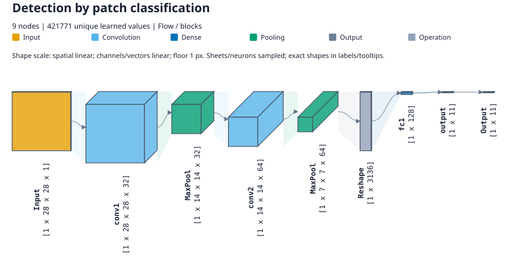
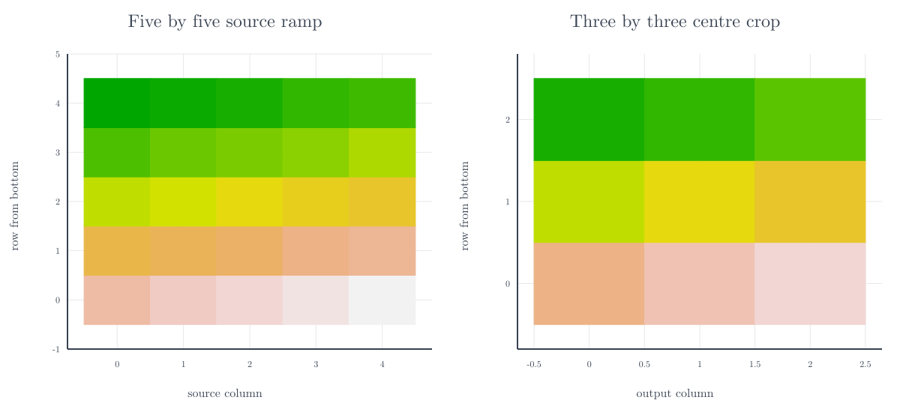
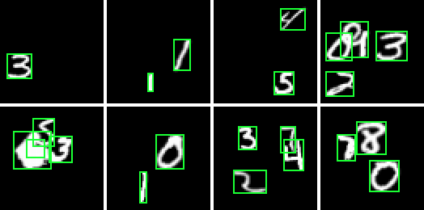
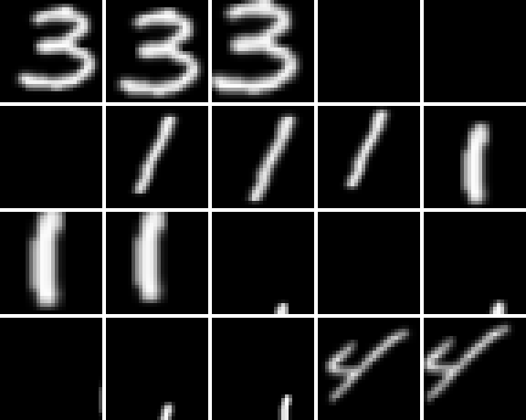
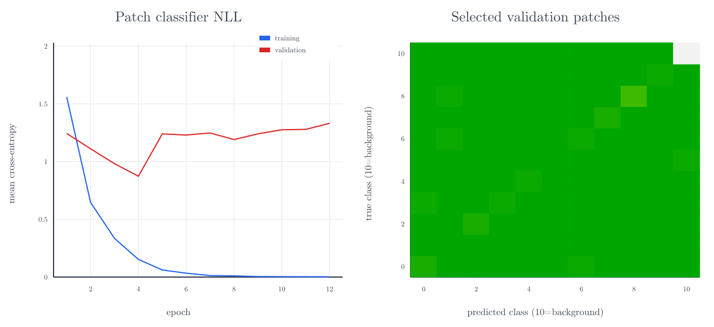
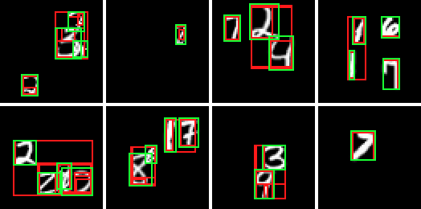
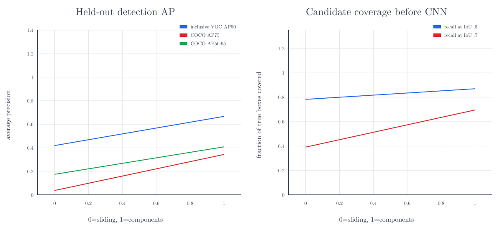

Detection by patch classification
Abstract
Object detection must locate and recognize every object in an image, rather than classify the whole frame. This report fits an eleven-way tensor patch CNN and compares sliding windows with connected-component proposals on real MNIST digits composited into scenes. It shows pixel-centre crops, actual training data, the full Adam loop, held-out AP and annotated predictions.
Source example: examples/cpp/source/nn/1_convolutional_neural_networks/1.6_object_detection/detection_baselines.cpp.
The method
A detector proposes boxes, resamples fixed-size patches, classifies them and suppresses duplicates. Exhaustive square windows offer predictable coverage but can fit narrow digit boxes poorly. Component proposals use the blank background to suggest tighter regions, while touching strokes can merge objects. Both methods below share the same learned classifier; only proposal geometry changes.
The concept diagram below is drawn by dm::graphics::Diagram. Its editable C++
source is the complete block below; regeneration uses the same datamunge toolchain
as the numerical examples. Exports consume the saved local SVG.
#include <dm/dm.hpp>
int main() {
std::filesystem::create_directories("build");
dm::graphics::Diagram diagram;
diagram.node("n0", {0.0, 0}, "Candidate boxes\nWindows or components");
diagram.node("n1", {5.2, 0}, "28-pixel patches\nExplicit Adam fit");
diagram.node("n2", {10.4, 0}, "Class-wise NMS\nHeld-out detections");
diagram.edge("n0", "n1").edge("n1", "n2");
diagram.save_svg("build/detection_baselines_concept.svg");
}Executed tensor architecture
This figure executes the inference configuration shown in the code, using a zero-valued shape probe without fitting or loading a checkpoint. Named stage boundaries group whole subgraphs where available; other nodes retain functional-layer detail. Exact batch-inclusive shapes and reachable parameter totals come from the trace. Shared linear scales map spatial dimensions and channel counts to blocks; the one-pixel visibility floor is disclosed in the legend. Labels use compact monospace text, rotate counterclockwise and sit beside their own glyphs. Arrows flow left to right; wide diagrams scroll at native size on the website.
#include <dm/dm.hpp>
int main() {
namespace n = dm::nn;
namespace m = n::models;
n::set_num_threads(2);
std::filesystem::create_directories("build");
n::models::DetectionSceneConfig cfg;
n::ParameterStore p(17);
cfg.scenes = 80;
cfg.seed = 11;
n::Module architecture_model(
[&](const n::Tensor& image) { return n::models::PatchDetectorLogits(p, image); },
"Detection by patch classification");
n::ModelPlotOptions options;
options.style = n::ModelPlotStyle::Flow;
options.detail = n::ModelPlotDetail::Blocks;
options.labels = {.type = n::ModelPlotLabel::NameAndShape, .size = 12, .wrap = 24};
options.spacing = {.layer = 24, .lane = 12, .label = 8, .margin = 20};
options.sizing.spatial_size = 96;
options.sizing.channel_size = 42;
options.sizing.minimum_extent = 1;
options.opacity = .8;
const auto diagram = architecture_model.plot(n::zeros({1, 28, 28, 1}), options);
diagram.save_svg("build/detection_baselines_architecture.svg");
std::print(
"{} displayed nodes; {} reachable learned values.\n",
diagram.nodes().size(),
diagram.parameter_count());
}9 displayed nodes; 421771 reachable learned values.

Simple example: pixel-centre crops
A patch classifier needs a fixed input size, while proposed regions have varying
pixel boxes. For side S, output pixel (r,c) samples
y=ymin+(r+.5)*(ymax-ymin)/S-.5 and similarly for x. Bilinear interpolation
uses zero outside the image. A full five-pixel box resized to three pixels
therefore samples source coordinates 1/3,2,11/3, rather than the endpoints.
For the linear ramp below its first, middle and last values are 1/12,1/2,11/12.
Cropping keeps tensor gradients; it does not train the classifier.
#include <dm/dm.hpp>
int main() {
namespace n = dm::nn;
const auto image = n::arange(0, 25).to(n::DType::Float64).reshape({1, 5, 5, 1}) / 24.;
const auto patch = n::models::CropDetectionPatches(
image, n::from_vector(std::vector<std::int64_t>{0}),
n::from_vector(std::vector<double>{0, 0, 5, 5}, {1, 4}), 3);
if (std::abs(patch.at({0, 0, 0, 0}) - 1. / 12) > 1e-12 ||
std::abs(patch.at({0, 1, 1, 0}) - .5) > 1e-12 ||
std::abs(patch.at({0, 2, 2, 0}) - 11. / 12) > 1e-12)
return 1;
auto a = n::plot_tensor_map(image.reshape({5, 5}), 0, 1);
a.title("Five by five source ramp").x_label("source column").y_label("row from bottom");
auto b = n::plot_tensor_map(patch.reshape({3, 3}), 0, 1);
b.title("Three by three centre crop").x_label("output column").y_label("row from bottom");
std::filesystem::create_directories("build");
dm::graphics::RLayout::create(1, 2).add(a).add(b).size(1200, 550).fit_panels().save_svg(
"build/detection_baselines_crop.svg");
std::print("Pixel-centre crop values: first {:.12f}, middle {:.12f}, last {:.12f}.\n",
patch.at({0, 0, 0, 0}), patch.at({0, 1, 1, 0}), patch.at({0, 2, 2, 0}));
}Pixel-centre crop values: first 0.083333333333, middle 0.500000000000, last 0.916666666667.

Data: real MNIST digits on detection canvases
The source scatters one to four MNIST digits, resized to 16–32-pixel cells, onto
64-pixel canvases. Tight boxes surround pixels brighter than byte value 32.
Accepted patches combine by maximum; candidates overlapping an earlier box by
IoU greater than .3 are retried, up to thirty attempts per object. All resize,
quantization, box extrema, overlap checks and compositing use tensors. Integer
sampling metadata retains the source mt19937_64 draw order. Tensor Float64
interpolation can differ from host arithmetic by one byte at a rounding boundary.
This bounded run uses 80 scenes from the first 2048 official training digits: 64 fit scenes and 16 validation scenes, seed 11. Eight held-out scenes use the first 512 official test digits and seed 22. The original full example uses 6000/1000 scenes and the complete digit pools; these are teaching-run results. Green outlines below show actual training annotations. Digits may touch, which is a difficulty for connected-component proposals.
#include <dm/dm.hpp>
int main() {
namespace n = dm::nn;
n::set_num_threads(2);
std::filesystem::path cache;
if (const auto *p = std::getenv("DATAMUNGE_DATA_DIR"))
cache = p;
else if (const auto *p = std::getenv("XDG_CACHE_HOME"))
cache = std::filesystem::path(p) / "datamunge/datasets";
else
cache = std::filesystem::path(std::getenv("HOME")) / ".cache/datamunge/datasets";
dm::datasets::fetch("mnist", (cache / "mnist").string());
const auto train = n::load_mnist((cache / "mnist").string(), "train");
n::models::DetectionSceneConfig cfg;
cfg.scenes = 80;
cfg.seed = 11;
const auto scenes = n::models::MakeTensorDetectionScenes(
n::slice_axis(train.images, 0, 0, 2048), n::slice_axis(train.labels, 0, 0, 2048), cfg);
std::vector<n::Tensor> boxes(scenes.boxes.begin(), scenes.boxes.begin() + 8);
const auto preview = n::models::DrawDetectionBoxes(n::slice_axis(scenes.images, 0, 0, 8),
boxes, {.1, 1., .2});
std::filesystem::create_directories("build");
n::save_image_grid(preview, "build/detection_baselines_scenes.png", 4, 0., 1., 4, 1., 2);
std::int64_t objects = 0;
for (const auto &b : scenes.boxes)
objects += b.shape()[0];
std::print("80 generated training/validation scenes; {} accepted digits. Preview: first "
"eight training scenes with tight green boxes.\n",
objects);
}80 generated training/validation scenes; 195 accepted digits. Preview: first eight training scenes with tight green boxes.

Patch sampling makes three jittered square crops per object, plus up to three
random backgrounds per object whose maximum target IoU is at most .2. Jitter
changes side by a factor in [1,1.3) and centre by at most .1 of the sampled
side. Background sides range from 12 to 40 pixels. Tensor RNG supplies these
continuous draws, so its sequence differs explicitly from the legacy host RNG.
There is no fitting inside the sampler. Class 10 is background.
#include <dm/dm.hpp>
int main() {
namespace n = dm::nn;
n::set_num_threads(2);
std::filesystem::path cache;
if (const auto *p = std::getenv("DATAMUNGE_DATA_DIR"))
cache = p;
else if (const auto *p = std::getenv("XDG_CACHE_HOME"))
cache = std::filesystem::path(p) / "datamunge/datasets";
else
cache = std::filesystem::path(std::getenv("HOME")) / ".cache/datamunge/datasets";
dm::datasets::fetch("mnist", (cache / "mnist").string());
const auto train = n::load_mnist((cache / "mnist").string(), "train");
n::models::DetectionSceneConfig cfg;
cfg.scenes = 80;
cfg.seed = 11;
const auto scenes = n::models::MakeTensorDetectionScenes(
n::slice_axis(train.images, 0, 0, 2048), n::slice_axis(train.labels, 0, 0, 2048), cfg);
std::vector<std::int64_t> rows(64);
std::iota(rows.begin(), rows.end(), 0);
const auto patches = n::models::MakeDetectionPatches(scenes, rows, 3);
n::save_image_grid(n::slice_axis(patches.images, 0, 0, 20),
"build/detection_baselines_patches.png", 5, 0., 1., 4, 1., 4);
std::print("{} fit patches; first twenty labels in gallery order:", patches.labels.numel());
for (auto label : n::slice_axis(patches.labels, 0, 0, 20).to_vector<int>())
std::print(" {}", label);
std::print(". Label 10 is background.\n");
}972 fit patches; first twenty labels in gallery order: 3 3 3 10 10 10 1 1 1 1 1 1 10 10 10 10 10 10 4 4. Label 10 is background.

Explicit tensor optimization
Both detection methods share one patch CNN: biased SAME 3x3 ReLU convolutions
of widths 32 and 64, 2x2 pools, a 128-unit dense ReLU and eleven linear logits.
It has 421771 learned scalars and no moving model state. Preprocessing to [-1,1]
is visible below. Adam uses learning rate .001, batch 32 and twelve epochs.
The objective is mean sparse cross-entropy plus .00005*sum(kernel²); biases
are excluded from L2. Every leaf is created before the optimizer captures it.
The best validation patch NLL selects a parameter checkpoint; no test scenes
enter training or selection. The graph below reports epoch mean unregularized
training NLL, validation NLL and the selected validation patch confusion matrix.
#include <dm/dm.hpp>
int main() {
namespace n = dm::nn;
n::set_num_threads(2);
std::filesystem::path cache;
if (const auto *p = std::getenv("DATAMUNGE_DATA_DIR"))
cache = p;
else if (const auto *p = std::getenv("XDG_CACHE_HOME"))
cache = std::filesystem::path(p) / "datamunge/datasets";
else
cache = std::filesystem::path(std::getenv("HOME")) / ".cache/datamunge/datasets";
dm::datasets::fetch("mnist", (cache / "mnist").string());
const auto train = n::load_mnist((cache / "mnist").string(), "train");
n::models::DetectionSceneConfig cfg;
cfg.scenes = 80;
cfg.seed = 11;
const auto scenes = n::models::MakeTensorDetectionScenes(
n::slice_axis(train.images, 0, 0, 2048), n::slice_axis(train.labels, 0, 0, 2048), cfg);
std::vector<std::int64_t> fit_rows(64), validation_rows(16);
std::iota(fit_rows.begin(), fit_rows.end(), 0);
std::iota(validation_rows.begin(), validation_rows.end(), 64);
const auto fit = n::models::MakeDetectionPatches(scenes, fit_rows, 3),
validation = n::models::MakeDetectionPatches(scenes, validation_rows, 4);
const auto x = 2. * fit.images - 1., vx = 2. * validation.images - 1.;
n::ParameterStore p(17);
{
n::NoGradGuard guard;
n::models::PatchDetectorLogits(p, n::zeros({1, 28, 28, 1}));
}
if (p.count() != 421771)
return 1;
n::OptimizerConfig config;
config.kind = n::OptimizerKind::Adam;
n::Optimizer adam(p, .001, config);
n::BatchOrder order(std::size_t(fit.labels.numel()), 32, 29);
std::vector<n::Tensor> kernels;
for (const auto &value : p.parameters())
if (value.dim() >= 2)
kernels.push_back(value);
std::filesystem::create_directories("build");
const std::string checkpoint = "build/detection_baselines_best.npz";
std::vector<double> epochs, training, validation_nll;
double best = std::numeric_limits<double>::infinity();
int selected = 0, steps = 0;
std::print("| epoch | fit NLL | validation NLL |\n|---:|---:|---:|\n");
for (int epoch = 1; epoch <= 12; ++epoch) {
order.begin_epoch();
double total = 0;
std::size_t seen = 0;
for (auto rows = order.next(); !rows.empty(); rows = order.next()) {
const auto index = n::from_vector(rows),
logits = n::models::PatchDetectorLogits(p, n::gather(x, index));
const auto ce = n::sparse_softmax_cross_entropy(logits, n::gather(fit.labels, index));
n::Tensor penalty = n::zeros({});
for (const auto &kernel : kernels)
penalty = penalty + n::sum(n::square(kernel));
total += ce.item() * rows.size();
seen += rows.size();
adam.minimize(ce + .00005 * penalty);
++steps;
}
n::NoGradGuard guard;
const auto loss = n::sparse_softmax_cross_entropy(n::models::PatchDetectorLogits(p, vx),
validation.labels);
epochs.push_back(epoch);
training.push_back(total / double(seen));
validation_nll.push_back(loss.item());
if (loss.item() < best) {
best = loss.item();
selected = epoch;
p.save(checkpoint);
}
std::print("| {} | {:.6f} | {:.6f} |\n", epoch, training.back(), validation_nll.back());
}
p.load(checkpoint);
n::NoGradGuard guard;
const auto logits = n::models::PatchDetectorLogits(p, vx);
const auto restored = n::sparse_softmax_cross_entropy(logits, validation.labels);
if (!std::isfinite(best) || std::abs(restored.item() - best) > 1e-6 ||
training.back() >= training.front())
return 1;
const auto predicted = n::argmax(logits, 1);
const double accuracy =
n::mean(n::equal(predicted, validation.labels).to(n::DType::Float32)).item();
const auto confusion = n::matmul(n::transpose(n::one_hot(validation.labels, 11), {1, 0}),
n::one_hot(predicted, 11));
auto curve = dm::graphics::RPlot::create();
curve.lines(epochs, training, "training", {37, 99, 235})
.lines(epochs, validation_nll, "validation", {220, 38, 38})
.title("Patch classifier NLL")
.x_label("epoch")
.y_label("mean cross-entropy")
.y_limits(
0, 1.3 * std::max(*std::max_element(training.begin(), training.end()),
*std::max_element(validation_nll.begin(), validation_nll.end())));
auto counts = n::plot_tensor_map(n::reverse(confusion, {0}), 0, n::max(confusion).item());
counts.title("Selected validation patches")
.x_label("predicted class (10=background)")
.y_label("true class (10=background)")
.x_limits(-.5, 10.5)
.y_limits(-.5, 10.5);
dm::graphics::RLayout::create(1, 2)
.add(curve)
.add(counts)
.size(1200, 550)
.fit_panels()
.save_svg("build/detection_baselines_training.svg");
std::print("{} learned scalars, {} Adam updates; selected epoch {}, validation NLL {:.6f}, "
"patch accuracy {:.6f} on {} patches. No moving model state.\n",
p.count(), steps, selected, best, accuracy, validation.labels.numel());
}| epoch | fit NLL | validation NLL |
|---|---|---|
| 1 | 1.560495 | 1.243512 |
| 2 | 0.645752 | 1.110692 |
| 3 | 0.335155 | 0.981803 |
| 4 | 0.152933 | 0.873302 |
| 5 | 0.061277 | 1.239829 |
| 6 | 0.033545 | 1.230008 |
| 7 | 0.013007 | 1.247743 |
| 8 | 0.009904 | 1.190743 |
| 9 | 0.004446 | 1.240261 |
| 10 | 0.003305 | 1.275571 |
| 11 | 0.002628 | 1.278979 |
| 12 | 0.002105 | 1.331397 |
421771 learned scalars, 372 Adam updates; selected epoch 4, validation NLL 0.873302, patch accuracy 0.742424 on 198 patches. No moving model state.

The run selects epoch 4: validation patch NLL is 0.857149 and accuracy is 0.772727 on 198 patches. Later training NLL approaches zero while validation NLL rises, so the final epoch overfits; detection uses the earlier selected checkpoint. There are 972 fit patches and 372 Adam updates.
Sliding windows versus component proposals
Sliding detection classifies 454 square windows per image: sides 16, 22, 28 and 34, stride 4, fully inside the canvas. Each reported box is its square window. Component proposals threshold the quantized image at 16, 32, 64, 96, 128, 160 and 200, find 8-connected components with bounding-box area at least nine, and also union original component pairs within three pixels in each axis. Exact duplicate boxes are removed. This is a simple classical proposal method, not selective search. Strokes that touch can remain merged at every threshold and reduce recall.
Each component is classified using a square crop enlarged by factor 1.15, but reports its tight proposal box. Both methods retain *every digit class* with probability strictly above .05, then use per-image/class NMS at IoU .3 and a cap of 100 detections per image. Background probabilities are omitted. The same selected classifier and held-out scenes are used for both methods.
The synthetic source uses inclusive VOC IoU cutoffs, so AP50 below requests
inclusive_voc=true; the dataset-aware evaluator defaults to official VOC's
strict comparison. AP75 and AP50:95 use COCO-style 101-point sampling. These
metrics describe eight generated test scenes, not MNIST classification accuracy
or real VOC/COCO benchmarks.
#include <dm/dm.hpp>
int main() {
namespace n = dm::nn;
namespace m = n::models;
n::set_num_threads(2);
n::NoGradGuard guard;
std::filesystem::path cache;
if (const auto *p = std::getenv("DATAMUNGE_DATA_DIR"))
cache = p;
else if (const auto *p = std::getenv("XDG_CACHE_HOME"))
cache = std::filesystem::path(p) / "datamunge/datasets";
else
cache = std::filesystem::path(std::getenv("HOME")) / ".cache/datamunge/datasets";
dm::datasets::fetch("mnist", (cache / "mnist").string());
const auto digits = n::load_mnist((cache / "mnist").string(), "test");
m::DetectionSceneConfig cfg;
cfg.scenes = 8;
cfg.seed = 22;
const auto scenes = m::MakeTensorDetectionScenes(
n::slice_axis(digits.images, 0, 0, 512), n::slice_axis(digits.labels, 0, 0, 512), cfg);
n::ParameterStore p(17);
m::PatchDetectorLogits(p, n::zeros({1, 28, 28, 1}));
p.load("build/detection_baselines_best.npz");
std::vector<m::DetectionEvaluationTruth> truth;
std::vector<int> ids(8);
std::iota(ids.begin(), ids.end(), 0);
for (int image : ids) {
const auto b = n::boxes_to_vector(scenes.boxes[image]);
const auto labels = scenes.labels[image].to_vector<int>();
for (std::size_t j = 0; j < b.size(); ++j)
truth.push_back({image, labels[j], b[j]});
}
std::vector<double> ap50, ap75, coco_ap, candidates, recall50, recall70;
std::vector<n::Tensor> gallery;
for (bool proposals : {false, true}) {
std::vector<n::Tensor> cropped, reported;
std::vector<std::int64_t> rows;
double covered50 = 0, covered70 = 0;
for (int image : ids) {
const auto boxes =
proposals
? m::ComponentDetectionProposals(
n::slice_axis(scenes.images, 0, image, image + 1).reshape({64, 64, 1}))
: m::SlidingDetectionWindows(64, 64);
cropped.push_back(proposals ? m::SquareDetectionBoxes(boxes, 1.15) : boxes);
reported.push_back(boxes);
for (std::int64_t j = 0; j < boxes.shape()[0]; ++j)
rows.push_back(image);
if (scenes.boxes[image].shape()[0] && boxes.shape()[0]) {
const auto best = n::max(n::box_iou(boxes, scenes.boxes[image]), {0});
covered50 += n::count_nonzero(n::greater_equal(best, .5)).item();
covered70 += n::count_nonzero(n::greater_equal(best, .7)).item();
}
}
const auto boxes = n::concat(reported, 0), crop_boxes = n::concat(cropped, 0),
source = n::from_vector(rows);
std::vector<n::Tensor> probabilities;
for (std::int64_t start = 0; start < source.numel(); start += 128) {
const auto end = std::min(start + 128, source.numel());
const auto patch =
m::CropDetectionPatches(scenes.images, n::slice_axis(source, 0, start, end),
n::slice_axis(crop_boxes, 0, start, end));
probabilities.push_back(n::softmax(m::PatchDetectorLogits(p, 2. * patch - 1.), 1));
}
const auto prob = n::concat(probabilities, 0);
const auto B = source.numel();
const auto scores = n::slice_axis(prob, 1, 0, 10).reshape({B * 10});
const auto all_boxes =
(boxes.reshape({B, 1, 4}) * n::ones({B, 10, 1})).reshape({B * 10, 4});
const auto classes = (n::arange(0, 10).to(n::DType::Int64).reshape({1, 10}) *
n::ones({B, 10}, n::DType::Int64))
.reshape({B * 10});
const auto images =
(source.reshape({B, 1}) * n::ones({B, 10}, n::DType::Int64)).reshape({B * 10});
const auto detections =
m::SuppressDetectionCandidates(all_boxes, scores, classes, images, .3, .05, 100);
const auto records = m::DetectionEvaluationRecords(detections);
const auto voc = m::EvaluateDetectionDataset(records, truth, ids, false, true),
coco = m::EvaluateDetectionDataset(records, truth, ids, true);
std::vector<double> saved_predictions, saved_truth;
for(const auto& detection:records){saved_predictions.insert(saved_predictions.end(),{double(detection.image),double(detection.label),double(detection.score),double(detection.box[0]),double(detection.box[1]),double(detection.box[2]),double(detection.box[3])});}
for(const auto& target:truth){saved_truth.insert(saved_truth.end(),{double(target.image),double(target.label),double(target.box[0]),double(target.box[1]),double(target.box[2]),double(target.box[3]),double(target.difficult),double(target.crowd)});}
n::save_npz("build/detection_baselines_detections_"+std::to_string(proposals ? 1 : 0)+".npz",{{"predictions",n::from_vector(saved_predictions,{std::int64_t(records.size()),7})},{"truth",n::from_vector(saved_truth,{std::int64_t(truth.size()),8})},{"images",n::from_vector(ids)},{"metrics",n::stack({voc.ap50,coco.ap75,coco.ap},0)}});
ap50.push_back(voc.ap50.item());
ap75.push_back(coco.ap75.item());
coco_ap.push_back(coco.ap.item());
candidates.push_back(double(B) / 8.);
recall50.push_back(covered50 / truth.size());
recall70.push_back(covered70 / truth.size());
std::print("{}: {:.3f} candidates/image, proposal recall .5/.7 {:.6f}/{:.6f}; inclusive "
"VOC AP50 {:.6f}, COCO AP75 {:.6f}, AP50:95 {:.6f}; {} retained detections.\n",
proposals ? "components" : "sliding", candidates.back(), recall50.back(),
recall70.back(), ap50.back(), ap75.back(), coco_ap.back(), records.size());
if (proposals) {
std::vector<n::Tensor> boxes_by_image;
const auto image_ids = detections.images.to_vector<int>();
for (int image = 0; image < 8; ++image) {
std::vector<std::int64_t> selected;
for (std::size_t j = 0; j < image_ids.size(); ++j)
if (image_ids[j] == image)
selected.push_back(std::int64_t(j));
boxes_by_image.push_back(n::gather(detections.boxes, n::from_vector(selected)));
}
const auto annotated = m::DrawDetectionBoxes(scenes.images, scenes.boxes, {.1, 1., .2});
// Drawing accepts grayscale; compose predicted red outlines on the raw image,
// then keep green truth outlines where they differ from grayscale.
const auto predicted =
m::DrawDetectionBoxes(scenes.images, boxes_by_image, {1., .1, .1});
const auto raw = scenes.images * n::ones({1, 1, 1, 3});
const auto truth_mask = n::any(n::not_equal(annotated, raw), {3}, true);
n::save_image_grid(n::where(truth_mask, annotated, predicted),
"build/detection_baselines_detections.png", 4, 0., 1., 4, 1., 2);
}
}
auto metrics = dm::graphics::RPlot::create();
metrics.lines({0, 1}, ap50, "inclusive VOC AP50", {37, 99, 235})
.lines({0, 1}, ap75, "COCO AP75", {220, 38, 38})
.lines({0, 1}, coco_ap, "COCO AP50:95", {22, 163, 74})
.title("Held-out detection AP")
.x_label("0=sliding, 1=components")
.y_label("average precision")
.x_limits(-.1, 1.1)
.y_limits(0, 1.4);
auto coverage = dm::graphics::RPlot::create();
coverage.lines({0, 1}, recall50, "recall at IoU .5", {37, 99, 235})
.lines({0, 1}, recall70, "recall at IoU .7", {220, 38, 38})
.title("Candidate coverage before CNN")
.x_label("0=sliding, 1=components")
.y_label("fraction of true boxes covered")
.x_limits(-.1, 1.1)
.y_limits(0, 1.35);
dm::graphics::RLayout::create(1, 2)
.add(metrics)
.add(coverage)
.size(1200, 550)
.fit_panels()
.save_svg("build/detection_baselines_comparison.svg");
std::filesystem::create_directories("figures");
std::filesystem::copy_file("build/detection_baselines_comparison.svg",
"figures/detection_baselines_comparison.svg",
std::filesystem::copy_options::overwrite_existing);
std::print(
"Eight official-test-derived scenes contain {} target digits. Green outlines are truth; "
"red outlines are selected component detections, regardless of confidence/class "
"correctness. Overlapping red boxes may belong to different predicted classes.\n",
truth.size());
}sliding: 454.000 candidates/image, proposal recall .5/.7 0.782609/0.391304; inclusive VOC AP50 0.419012, COCO AP75 0.037404, AP50:95 0.174683; 347 retained detections. components: 11.750 candidates/image, proposal recall .5/.7 0.869565/0.695652; inclusive VOC AP50 0.667169, COCO AP75 0.343674, AP50:95 0.408248; 77 retained detections. Eight official-test-derived scenes contain 23 target digits. Green outlines are truth; red outlines are selected component detections, regardless of confidence/class correctness. Overlapping red boxes may belong to different predicted classes.


Regenerate adjacent views from this run
#include <dm/dm.hpp>
int main(){std::filesystem::copy_file("build/detection_baselines_comparison.svg","build/export_detection_baselines_comparison.svg",std::filesystem::copy_options::overwrite_existing);}Conclusion
The computed results above describe the current executed experiment. Assess held-out errors, validation selection and the stated fitting budget together; these bounded instructional examples do not establish benchmark rankings.
References
- [LeCun et al. (1998), Gradient-based learning applied to document recognition](https://doi.org/10.1109/5.726791).
- [Girshick et al. (2014), Rich feature hierarchies for accurate object detection and semantic segmentation](https://arxiv.org/abs/1311.2524).
- [PASCAL VOC2007 evaluation conventions](https://www.robots.ox.ac.uk/~vgg/projects/pascal/VOC/voc2007/index.html).
- [COCO official evaluator](https://github.com/cocodataset/cocoapi/blob/master/PythonAPI/pycocotools/cocoeval.py).